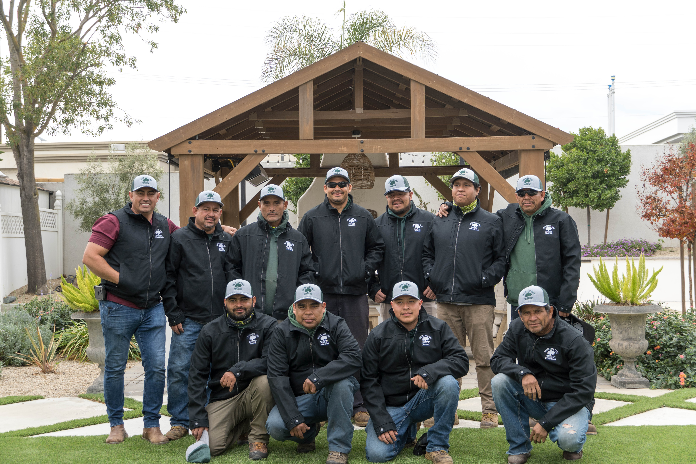

Tree Removal
Removal planning for problem trees near yards, fences, driveways, structures, and access routes.

Brentwood tree care - Contra Costa & Alameda counties
Green Lane Tree Services helps homeowners, rentals, and properties clear problem trees, shape overgrowth, reduce crowns, grind stumps, and clean up the debris after the work is done.
Services
Focused service pages make Green Lane easier to find for the jobs customers actually search for.
Removal planning for problem trees near yards, fences, driveways, structures, and access routes.
Selective pruning, branch clearance, and shaping for trees that need control without full removal.
Canopy reduction work to manage weight, height, and clearance while preserving the tree when possible.
Stump grinding after removals so yards, walkways, and planting areas are usable again.
Assessment and removal support for storm-damaged, leaning, cracked, or high-risk trees.
Debris cleanup, logs, chips, and job-site organization so customers are not left with the mess.
Work Gallery
Photos help customers understand the scale of work Green Lane handles: climbing, removals, equipment access, cut material, and the cleanup that happens before the crew leaves.
See more work


Founder-led service
Franklin Ramos, president and founder of Green Lane Tree Services, has more than 10 years of experience with tree removal, pruning, and hazardous trees. The business is built around quality work, customer service, and treating each job with the same standards the crew would expect as a customer.
Based in Brentwood and serving Contra Costa and Alameda counties.
Reputation
Contact
For tree removals, pruning, crown reduction, stump grinding, and hazardous tree work in Contra Costa and Alameda counties.